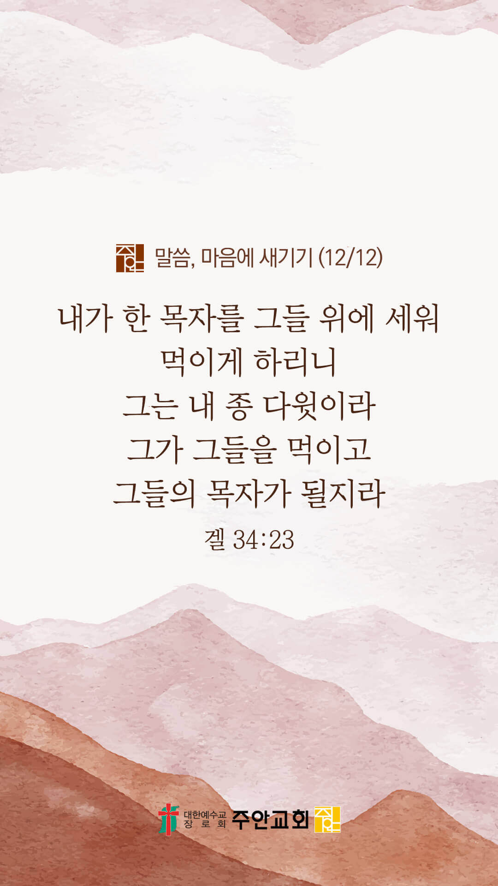

기도실 안내
2021년 12월 12일 (주일)
- 온라인 기도실은 온 회중이 함께 주님 앞으로 나아가는 자리입니다
- 30분 정도 여유를 가지고 하시기 바랍니다
- 말씀과 묵상, 찬양과 기도로 나아갑니다
- 배경 음악이 나올 수 있습니다 볼륨을 조절해주세요
준비가 되셨으면 아래의 버튼을 눌러주세요
할렐루야
내 영혼아 여호와를 찬양하라
시 146:1
- 가사를 묵상하며 읽습니다
사망의 그늘에 앉아
죽어가는 나의 백성들
절망과 굶주림에 갇힌 저들은
내 마음의 오랜 슬픔
고통의 멍에에 매여
울고 있는 나의 자녀들
나는 이제 일어나 저들의 멍에를 꺾고
눈물 씻기길 원하는데
할렐루야
내 영혼아 여호와를 찬양하라
시 146:1
- 가사를 묵상하며 읽습니다
누가 내게 부르짖어
저들을 구원케 할까
누가 나를 위해 가서
나의 사랑을 전할까
나는 이제 보기 원하네
나의 자녀들 살아나는 그날
기쁜 찬송 소리 하늘에
웃음 소리 온 땅 가득한 그날
할렐루야
내 영혼아 여호와를 찬양하라
시 146:1
사망의 그늘에 앉아(그 날) by 고형원
위의 찬양이 끝나면 말씀읽기를 눌러주시면 됩니다
주의 말씀은 내 발에 등이요
내 길에 빛이니이다 (시119:105)
오늘의 말씀입니다
음악 소리가 크면 조절하시기 바랍니다

마음의 묵상
겔 34:23
“내가 한 목자를 그들 위에 세워 먹이게 하리니 그는 내 종 다윗이라 그가 그들을 먹이고 그들의 목자가 될지라”
1. 이 말씀에서 다윗은 누구를 예표(미리 나타냄)하고 있을까요?
2. 예수님이 당신의 참 목사이심을 믿으시나요?
3. 목사이신 예수님께 지켜주시고 인도해달라고 잠시 기도합시다
목자만을 따르게 하소서
회개, 삶의 방향을 바꾸는 결정
주님, 제가 아픕니다
“예수께서 들으시고 이르시되
건강한 자에게는 의사가 쓸 데 없고
병든 자에게라야 쓸 데 있느니라”
- 마태복음 9:12 -
3분 정도 회개하며 주님 앞에 나아갑니다
사슴이 시냇물을 찾기에 갈급함 같이
시 42:1
- 다음의 말씀을 소리 내어 읽습니다
[시편 18장 1-3절]
1 나의 힘이신 여호와여 내가 주를 사랑하나이다
2 여호와는 나의 반석이시요 나의 요새시요 나를 건지시는 이시요 나의 하나님이시요 내가 그 안에 피할 나의 바위시요 나의 방패시요 나의 구원의 뿔이시요 나의 산성이시로다
3 내가 찬송 받으실 여호와께 아뢰리니 내 원수들에게서 구원을 얻으리로다
하나님 나라
1. 하나님의 나라가 속히 이 땅에 임하게 하소서
하나님 아버지,
바이러스와 변이 바이러스의 확산을 막아주소서. 특별히 경제적으로 가난하고 정치적으로 폐쇄된 나라와 민족들을 보호하시고 지켜주소서.
속히 값싸고 먹는 치료제가 개발되게 하시고, 더 이상 치명적인 바이러스 변이가 일어나지 않게 하소서.
간절한 마음으로 3분 정도 기도합시다
남과 북
2. 남북한이 속히 복음으로 통일되게 하소서
하나님 아버지,
북한의 위정자들이 하나님을 경외하며 북한 주민들을 사랑하게 하소서. 그리하여 핵을 포기하고 대화하며 개방적인 정책을 택하게 하셔서,
그 땅에 자유와 복음이 전파되고, 북한 주민들에게 필요한 식량과 의료품이 공급되게 하소서.
간절한 마음으로 3분 정도 기도합시다
대한민국
3. 우리나라가 하나님을 경외하는 나라가 되게 하소서
하나님 아버지,
바이러스로 인해 고통받는 이들을 긍휼히 여겨주소서. 특별히 취약계층과 사회적 약자들을 보살펴 주소서. 위정자들에게는 지혜와 올바른 리더십을 주시고,
국민들은 자신과 공동체를 위해 방역수칙을 준수하는 일에 열심을 내게 하셔서 이 위기를 잘 이겨나가게 하소서.
간절한 마음으로 3분 정도 기도합시다
한국교회
4. 한국교회가 성령으로 새롭게 부흥되게 하소서
하나님 아버지,
한국교회가 2021년을 잘 마무리하고 2022년을 새롭게 준비하게 하소서. 한국교회가 지난 잘못을 되돌아보고 주님 앞에 회개하며,
지혜로운 고민과 선한 준비를 잘 감당하여서 2022년에 하나님과 세상 사람들에게 칭찬 받으며 복음을 전하는 선교적 교회가 되게 하소서.
간절한 마음으로 3분 정도 기도합시다
주안교회
5. 주안교회가 다음 세대를 세우는 선교적 교회가 되게 하소서
하나님 아버지,
주안의 모든 성도들이 하나님 앞에 간절히 기도하는 성도들이 되게 하소서. 모든 성도들마다 성령의 강력한 임재와 역사가 일어나게 하시고,
열방과 나라와 민족과 한국교회를 위하여 중보하는 기도의 용사들이 되게 하소서. 그리하여 우리의 기도를 통하여 병든 심령, 깨어진 가정,
무너진 한국교회, 혼돈 가운데 있는 나라와 민족, 그리고 코로나로 인하여 신음하고 있는 지구촌이 회복되고 치유되는 역사가 있게 하소서.
간절한 마음으로 3분 정도 기도합시다
감사의 기도
- 오늘 기도를 인도하신 주님께 감사를 올려드립니다
- 아래의 구절을 읽고 주님께 감사의 마음을 올려드립시다
“주께서 나의 등불을 켜심이여
여호와 내 하나님이
내 흑암을 밝히시리이다”
- 시편 18장 28절 -
고요한 가운데 잠시 침묵하시기 바랍니다
파송, 세상을 향하여
- 오늘의 온라인 기도를 마쳤습니다
기도를 들으신 주님께서 평안히 가라 하십니다
주님께서 우리와 함께 하시니 두려울 것이 없습니다
새벽을 깨우며
- 새벽기도회 안내입니다